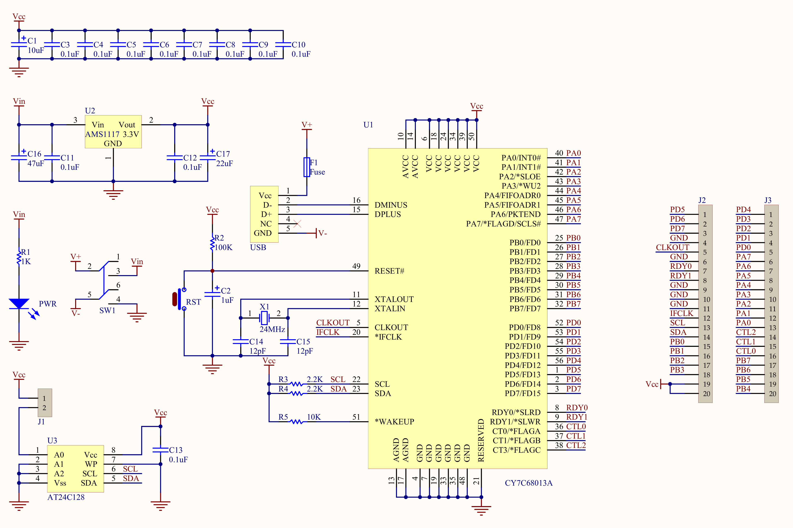

USB
之前有看过几次USB方面的书，也移植过USB驱动，不过一直也没什么时间投入来研究USB底层通信里面的东西，这次打算花点时间系统性刨根究底的分析一次
参考文档
开发工具、示例
Schematic

docs
NO. |
文件名称 |
摘要 |
|---|---|---|
0024 |
USB键盘驱动分析 |
|
0023 |
USB Camera数据通信原理 |
|
0022 |
如何定义Vendor命令 |
|
0021 |
GPIF接口使用 |
|
0020 |
Keil使用方法 |
|
0019 |
Linux编译DSLogic-fw |
|
0018 |
CY7C68013A与FPGA |
|
0017 |
Type-C参考 |
|
0016 |
一步传输示例 |
|
0015 |
如何发送Setup包 |
|
0014 |
流传输如何设置备选项 |
|
0013 |
USB描述符备用选择 |
|
0012 |
USB流模式示例编译 |
|
0011 |
HID兼容设备 |
|
0010 |
USB控制器会采用伪中断进行对设备进行轮询，Wireshare只有在有数据传输才会在总线上有Interrupt IN包，也就是说如果设备没有准备好数据，那么USB控制器是不会去轮询的。 |
|
0009 |
Wireshark过滤使用 |
|
0008 |
HID键盘示例 |
|
0007 |
USB Bulk传输示例 |
|
0006 |
配置Firmware开发环境，使用Keil UV2进行开发，不过需要配置环境才能使用，而不是安装完成了直接能够使用，目前是在Windows 10上进行配置环境是OK，说明在Windows 10上可以正常工作。 |
|
0005 |
使用Wireshark分析USB协议 |
|
0004 |
USB抓包工具 |
|
0003 |
开发板快速入门 |
|
0002 |
EZ-USB一些参考文档 |
|
0001 |
了解USB一些基本标准概念 |